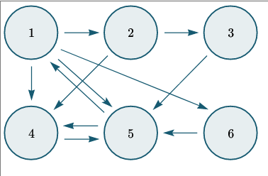

Hands-On Research: Data Science and Machine Learning Applications for Images and Behavior Analysis
2021-02-14
Chapter 1 Matrix Calculation for Data Science
Matrix calculation is one of the main knowledge required in several field to solve problems that involve several unknown variables. For example, in chemistry we have the following problem;
- A chemist need to make 2 liters of a \(15\%\) acid solution from \(10\%\) acid solution and a \(35\%\) acid solution. How many liters of each should the chemist mix to get the desired solution?
 In Bioengineering, matrix calculation is also an important tool for different application. For example,
In Bioengineering, matrix calculation is also an important tool for different application. For example,
- A biologist needs to run three different experiments using three elemental compounds; sodium pyruvate (\(x_1\)), glutamine (\(x_2\)), and glucose (\(x_3\)) to support cells growth. For the first, second and thirds experiments, the biologist has modeled the growth of the cell as follow \(x_1+2x_2+6x_3=8\) give a growing rate of 8 cells per hours, \(x_1-x_2+4x_3=5\) give a growing rate of 5 cells per hours, and \(2x_1+x_2+10x_3=13\) give a growing rate of 13 cells per hours, respectively. If we define each variable as the amount of concentration (mass/volume), what is the amount of concentration required for each experiment to obtain the given growing rate?
 3. Google’s Page rank is one of the main application of matrix computation, in particular its search engine uses . At the early of google, its engine used to deliver the most relevant result for our search queries. Let see this case,
3. Google’s Page rank is one of the main application of matrix computation, in particular its search engine uses . At the early of google, its engine used to deliver the most relevant result for our search queries. Let see this case,
 Google engineers assumed each of these pages is related in some way to the other pages, since there is at least one link to and from each page in the web.
Their task was to find the “most important” page for a particular search query, as indicated by the writers of all 6 pages. For example, if everyone linked to Page 1, and it was the only one that had 5 incoming links, then it would be easy - Page 1 would be returned at the top of the search result.
However, we can see some pages in our web are not regarded as very important. For example, Page 3 has only one incoming link. Should its outgoing link (to Page 5) be worth the same as Page 1’s outgoing link to Page 5?
The beauty of PageRank was that it regarded pages with many incoming links (especially from other popular pages) as more important than those from mediocre pages, and it gave more weighting to the outgoing links of important pages.
In this section we are going to work with matrices operation such as addition, subtraction, multiplication, point-wise multiplication, and eigenvalues-eigenvector computation. Also, we are going to learn how to compute the determinant of a matrix and the inverse of a matrix. More over, we will cover singular value decomposition. These concepts and properties allow us to solve linear system equation of the form \(Ax\approx b\), where \(A\in\mathbf{R^{n\times m}}\) is a matrix, \(x\in\mathbf{R}^{m\times1}\) is a vector, and \(b\in\mathbf{R^{n\times 1}}\).
1.1 Vectors, Matrices and simple Operations
A vector in \(m\) dimension (an \(m\)-vector) \(\textbf{x}\) is defined as an \(m\)-tuple of real numbers, which are the of \(\textbf{x}\). We write a vector as a column enclosed in square brackets:
\[\begin{equation} \textbf{x}= \begin{bmatrix} x_1 \\ x_2 \\ \vdots \\ x_m \end{bmatrix} \end{equation}\]
Matrices \(A\) is a 2-D array of numbers. In other words, \(A\in\mathbf{R^{m\times n}}\) is a square arrangement if \(m=n\), and it is a rectangular arrangement if \(m\ne n\). We write a matrix as follow
\[\begin{equation} A= \begin{bmatrix} A_{11}& A_{12} &\dots &A_{1n}\\ A_{21}& A_{22} &\dots &A_{2n}\\ \vdots&\vdots&\vdots&\vdots\\ A_{m1}& A_{m2} &\dots &A_{mn} \end{bmatrix} \end{equation}\] One important operation on matrices is the . The transpose of a matrix can be defined as the mirror image of the matrix across a diagonal line, called the . By transposition of the matrix \(A\in\mathbf{R^{m\times n}}\), a new matrix \(A^T\in\mathbf{R^{n\times m}}\) is obtained. The transpose of a matrix is represents as \[\begin{equation*} A^T_{ik} = A_{ki} \end{equation*}\] On the other hand, under transposition a column vector becomes a . \[\textbf{x}^T=[x_1, x_2, \ldots, x_m]\]
In other words, if a column vector is an \(m\times 1\) matrix, then its transpose is a \(1\times m\) matrix.
For matrices one has the following elementary rules for and
\[\begin{equation*} A\pm B = C, \hspace{2cm} C_{ik}=A_{ik}\pm B_{ik} \end{equation*}\] \[\begin{equation*} \alpha A =B, \hspace{2cm} B_{ik}=\alpha A_{ik} \end{equation*}\]
Now the product \(AB\) of two matrices is well-defined if the number of columns of the \(A\) is equal to the number of row of \(B\), e.g. \(A=A_{m\times l}\) and \(B=B_{l\times m}\).
\[\begin{equation*} AB=C,\hspace{2cm} C_{ik}=\sum_{j=1}^{l}A_{ij}B_{jk} \end{equation*}\]
Other important properties that involve the multiplication operation is that the transpose operation. The transpose operation is a transformation of row per columns, let see the following example.
\[\begin{equation*} A= \begin{bmatrix} 2& 3 &5&8\\ 7&10&25&1\\ 9&12&6&8\\ 3&2&1&5 \end{bmatrix} \end{equation*}\] then \[\begin{equation*} A^T= \begin{bmatrix} 2&7&9&3\\ 3&10&12&2\\ 5&25&6&1\\ 8&1&8&5 \end{bmatrix} \end{equation*}\]
The following property involve the transpose and multiplication operation between two matrices.
\[\begin{equation*} C^T=(AB)^T=B^TA^T \end{equation*}\]
In other hand, for vector we have \(a\cdot b=a^Tb=c\), it means \[c=\sum_{j=1}^{m} a_jb_j\].
Note: The matrix multiplication is not commutative, therefore \(AB\neq BA\). But the dot product between two vectors is commutative \(x^Ty=y^Tx\).
The of an \(n\times n\) matrix is a numerical value computed using the elements of a matrix. To compute the determinant of a \(2\times 2\) the following formula is used.
\[\begin{equation*} det(A)=det \begin{bmatrix} a&b\\ c&d\\ \end{bmatrix} = ad-bc \end{equation*}\]
The determinant of a \(3\times 3\) matrix is given by \[\begin{equation*} det(A)=det \begin{bmatrix} a& b &c\\ d&e&f\\ g&h&i\\ \end{bmatrix} = aei+bfg+cdh-afh-bdi-ceg. \end{equation*}\]
Different world’s problems have been solve by a power full property of some metrices called . This matrix inversion enables us to solve system linear equation, later we are going to adapt a system linear equation into a matrix equation of the form \(Ax=b\), where \(A\) is a matrix, and \(x,b\) are vectors.
First lets define the concept of . An identity matrix is a matrix whose entries on its diagonal are ones, and the rests of its entries are zeros. The mathematical definition can be as follows, \[\begin{equation} I_{i,j}=\left\{ \begin{array}{ll} 1, \hspace{0.3cm}if\hspace{0.5cm} i=j.\\ 0, \hspace{0.5cm} otherwise. \end{array} \right. \end{equation}\]
where \(I=(I_{i,j})\) and \(I\in\mathbf{R}^{n\times n}\). Formally, if \(I_n\in\mathbf{R}^{n\times n}\), and \(\forall x\in\mathbf{R}^n\), \(I_nx=x\).
Now, lets define the inverse of a matrix \(A\). The matrix inverse of \(A\in\mathbf{R}^{n\times n}\) is denoted as \(A^{-1}\), and it is defined as the matrix such \(A^{-1}A=I_n\)
To solve a linear system using matrix notation, we must to defined the matrix of coefficient.
Then, compute the inverse of a \(2\times2\) matrix
\[\begin{equation*} A^{-1}= \begin{bmatrix} a&b\\ c&d\\ \end{bmatrix}= \frac{1}{ad-bc} \begin{bmatrix} d&-b\\ -c&a\\ \end{bmatrix} \end{equation*}\]
To compute the inverse of a \(3\times 3\) matrix the following formula is used.
\[\begin{equation*} A^{-1}= \begin{bmatrix} a&b&c\\ d&f&g\\ g&h&i \end{bmatrix}= \frac{1}{D} \begin{bmatrix} ei-fh&ch-bi&bf-ce\\ fg-di&ai-cg&cd-af\\ dh-eg&bg-ah&ae-bd \end{bmatrix} \end{equation*}\] Where \(D=aei+bfg+cdh-afh-bdi-ceg\).
Note: A square matrix \(A\) is invertible if and only if its determinant non-zero.
In several field of science, one task is to find all the numbers \(\lambda\) and all vectors \(v\) that satisfy the equation.
\[\begin{equation} Av=\lambda v \end{equation}\]
Where A is a square matrix. Any number \(\lambas\) that satisfy 4, is called of \(A\). A vector \(v\) satisfying 4 is called eigenvector of \(A\). The eigenvalues \(\lambda\) are compute solving the following equation \(det(A-\lambda I)=0\) Where for every \(\Lambda\) that is found as a solution of 4, the corresponding set of eigenvector \(v\) is found from 4.\
Computing matrices operation could be an easy task if we used the right tools. In this course, we will use Jupyther notebook, which is an interface that helps us write code in python language . For the following exercises use Jupyter Notebook to complete each task. https://www.programiz.com/python-programming/matrix
Now, we are ready to solve the chemist, biology, and google’s page rank problems. Let’s start solving chemist’s problem. \
. The chemist need to make 2 liter of a \(15\%\) of acid solution. If you analyse the problem, the desire solution contains two acid solution. which they areConsequently, we get the following linear system equation
\[\begin{equation} \left\{ \begin{array}{ll} x+y=2\\ 0.10x+0.35y=0.15(2) \end{array} \right. \label{eqn:chemist_system} \end{equation}\]
Multiplying the second equation in by 10.
\[\begin{equation} \left\{ \begin{array}{ll} x+y=2\\ 10x+35y=30 \end{array} \right. \label{eqn:mulpBy10} \end{equation}\]
From the equation , the following matrix system is generated.
\[\begin{equation*} \begin{bmatrix} 1&1\\ 10&35\\ \end{bmatrix} \begin{bmatrix} x\\ y\\ \end{bmatrix} = \begin{bmatrix} 2\\ 30\\ \end{bmatrix} \end{equation*}\]
Let’s use Python to solve this linear system. To start using python you must to download and install it from https://www.python.org/downloads/. Now, to use the linear algebra package, we must to installs library https://numpy.org/install/. In this class we are going to work with Jupyther Notebook which can be install from https://jupyter.org/install.
- Find the sum of the following two matrices.
\[\begin{equation*} \begin{bmatrix} 5& -4 & 0\\ -2 & 4 & 3\\ \end{bmatrix} and \begin{bmatrix} -2& 4 & 3\\ 3 & 0 & -5\\ \end{bmatrix} \end{equation*}\]
- The scalar product of a constant and matrix. Find the following product if \(\lambda=3\).
\[\begin{equation*} \begin{bmatrix} 3& 0 & 3\\ 2 & 2 & -4\\ \end{bmatrix} \end{equation*}\]
- Compute the product of the two given matrices.
\[\begin{equation*} \begin{bmatrix} 3& 0 & 3\\ 2 & 2 & -4\\ \end{bmatrix} and \begin{bmatrix} 1 & -2\\ 3 & 0\\ 2 & -1 \end{bmatrix} \end{equation*}\]
Find the transpose of a matrix \[\begin{equation*} \begin{bmatrix} 4& -1 & 0\\ 2 & 1 & -3\\ \end{bmatrix} \end{equation*}\]
Compute the determinant of the following matrices. \[\begin{equation*} \begin{bmatrix} 2&1\\ 3&-1\\ \end{bmatrix} and \begin{bmatrix} 2&1&0\\ 2&4&-1\\ 3&-1&2 \end{bmatrix} \end{equation*}\]
Compute the inverse of the matrix
\[\begin{equation*} \begin{bmatrix} 3&0&0\\ 1&1&2\\ -2&0&1 \end{bmatrix} \end{equation*}\]
- Find the eigenvalues and eigenvectors of the following matrix.
\[\begin{equation*} \begin{bmatrix} 5&2\\ 2&2\\ \end{bmatrix} \end{equation*}\]